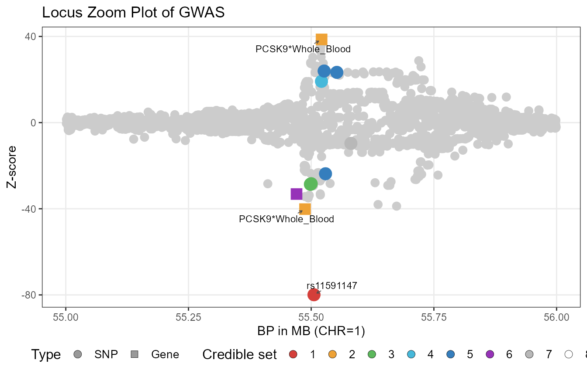
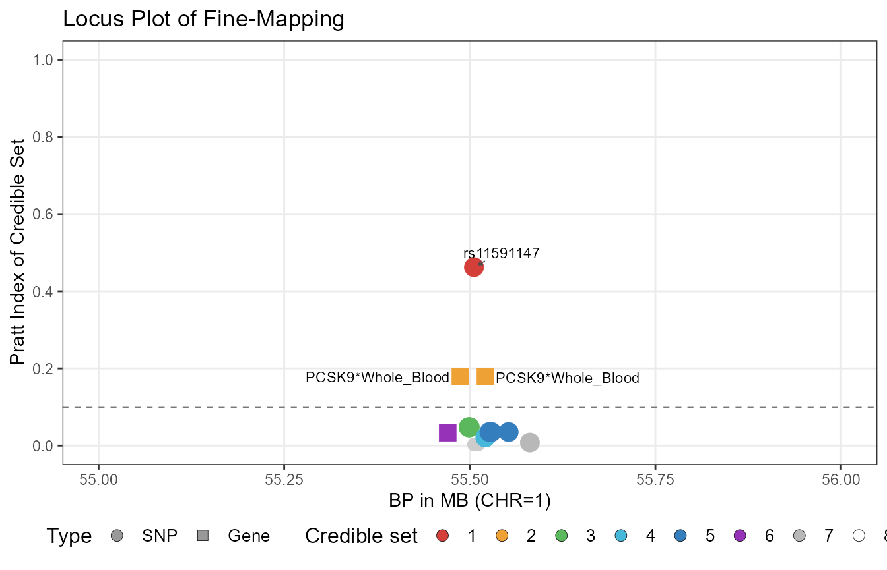

Analysis
Analysis.RmdWe show an example with step-by-step codes.
Load outcome GWAS data
Our first step is to load the GWAS summary data after SBayesRC QC:
library(data.table)
library(arrow)
library(ldscR)
library(TGVIS)
library(dplyr)
library(glue)
LDL=fread(glue("{filepath}/LDL.ma"))%>%setDT(.)
LDL
#> SNP A1 A2 freq b se p
#> <char> <char> <char> <num> <num> <num> <num>
#> 1: rs12132974 T C 0.079275 -0.0004260400 0.002584074 0.8690452
#> 2: rs12134490 C A 0.079225 -0.0004651126 0.002584819 0.8571996
#> 3: rs17276806 T C 0.079300 -0.0003976603 0.002583702 0.8776799
#> 4: rs139867617 T C 0.079275 -0.0003797266 0.002584074 0.8831724
#> 5: rs7526310 T C 0.123250 0.0011156130 0.002123766 0.5993751
#> ---
#> 7356514: rs28729663 A G 0.136000 -0.0007953800 0.002315470 0.7312171
#> 7356515: rs9616832 C T 0.073875 -0.0001726575 0.002668717 0.9484154
#> 7356516: rs147475742 A G 0.041625 0.0022210817 0.003494952 0.5250949
#> 7356517: rs115055839 C T 0.073975 -0.0001415992 0.002667057 0.9576587
#> 7356518: rs9616985 C T 0.073850 -0.0002142612 0.002669133 0.9360196
#> N r2
#> <int> <int>
#> 1: 1228642 1
#> 2: 1228642 1
#> 3: 1228642 1
#> 4: 1228642 1
#> 5: 1228642 1
#> ---
#> 7356514: 1203805 1
#> 7356515: 1228648 0
#> 7356516: 1228648 0
#> 7356517: 1228648 0
#> 7356518: 1228648 0This GWAS summary dataset was derived from the EUR-specific LDL-C GWAS of the GLGC consortium and subsequently imputed using SBayesRC. The imputed version is available here. Every GWAS summary data that has passed SBayesRC QC has exactly 7,356,518 SNPs, and the A1 and A2 alleles of each SNP are consistent with the A1 and A2 alleles in the SBayesRC LD matrix. The SNP information file is:
V=fread(glue("{filepath}/ukbEUR_Imputed/snp.info"))%>%
dplyr::select(SNP=ID,A1,A2,CHR=Chrom,BP=PhysPos,Freq=A1Freq,Block)%>%setDT(.)
V
#> SNP A1 A2 CHR BP Freq Block
#> <char> <char> <char> <int> <int> <num> <int>
#> 1: rs12132974 T C 1 801661 0.079275 1
#> 2: rs12134490 C A 1 801680 0.079225 1
#> 3: rs17276806 T C 1 801858 0.079300 1
#> 4: rs139867617 T C 1 802856 0.079275 1
#> 5: rs7526310 T C 1 804759 0.123250 1
#> ---
#> 7356514: rs28729663 A G 22 51219006 0.137750 591
#> 7356515: rs9616832 C T 22 51219387 0.073875 591
#> 7356516: rs147475742 A G 22 51219704 0.041625 591
#> 7356517: rs115055839 C T 22 51221731 0.073975 591
#> 7356518: rs9616985 C T 22 51229805 0.073850 591Here, the column Block is necessary as the LD matrices
are stored block-by-block.
The next step is 1) adding Z-score into this file and 2) zoom in the target locus (PCSK9) region:
LDL$CHR=V$CHR
LDL$BP=V$BP
LDL$Block=V$Block
LDL$Zscore=LDL$b/LDL$se
LDL_Locus=LDL%>%dplyr::filter(CHR==1&abs(BP-55.5e6)<0.5e6)%>%arrange(BP)Here for demonstration purposes, we consider a region with a radius of 0.5MB. However, in practice, users can flexibly choose the radius according to specific situations. We do not recommend an excessively large radius (e.g., 1.5MB) because at that point the dimension of the LD matrix will typically exceed 10 thousand, which will cause memory issues.
The next step is estimating the per-SNP heritability and inflation factor using LDSC:
fitldsc=ldsc.univ(gwas=as.data.frame(LDL[,c("SNP","Zscore","N")]),LDSC=as.data.frame(Hapmap3_EURLDSC),sampling.time=0)
#> [1] "Processing data"
#> Time difference of 4.571996 secs
#> [1] "Initial Heritability Estimate"
#> Time difference of 0.03129983 secs
#> [1] "Heritability Estimation (Reweighted)"
#> Time difference of 0.9223781 secs
print(fitldsc)
#> intercept intercept.se h2 h2.se M
#> 1 1.784062 NA 0.07295848 NA 1094541
var_inf=fitldsc$h2/fitldsc$MWe found that our functions sometimes fail due to subtle differences between data.table and data.frame. Therefore, when encountering issues, you can convert data.table to data.frame, just as we did when performing LDSC. We used different LDSC panels to estimate the inflation factor and heritability for GLGC lipids, and obtained similar results: large inflation (exceeding 1.5) while heritability is less than 0.1. This is slightly abnormal. However, we still recommend using LDSC estimates when there is no evidence to prove this is incorrect.
Load xQTL direct effect data
We utilize the fine-mapping results of eQTL data based on v10 data published by GTEx. Although GTEx also published fine-mapping results for sQTL and apaQTL, these results only contain credible sets of causal xQTLs but lack effect sizes, making them temporarily unavailable. We will update if they provide sQTL and apaQTL with effect sizes. We first examine the data structure:
path=glue("{filepath}/GTEx_v10_SuSiE_eQTL")
parquet_files=list.files(path=path,pattern="\\.parquet$",full.names=F)
Tissue=sapply(strsplit(basename(parquet_files),"\\."),function(x) x[1])%>%sort()
a=read_parquet(Sys.glob(glue("{path}/{Tissue[1]}*.parquet"))[1])
colnames(a)
#> [1] "phenotype_id" "gene_name" "biotype" "variant_id" "pip"
#> [6] "af" "cs_id" "cs_size" "afc" "afc_se"
head(a)
#> # A tibble: 6 × 10
#> phenotype_id gene_name biotype variant_id pip af cs_id cs_size afc
#> <chr> <chr> <chr> <chr> <dbl> <dbl> <int> <int> <dbl>
#> 1 ENSG000002272… WASH7P unproc… chr1_6476… 0.993 0.0675 1 1 0.578
#> 2 ENSG000002689… ENSG0000… proces… chr1_1010… 0.952 0.0120 1 1 0.857
#> 3 ENSG000002794… WASH9P unproc… chr1_5991… 0.999 0.0415 1 1 -0.615
#> 4 ENSG000002284… ENSG0000… transc… chr1_2851… 1 0.0169 1 1 -7.97
#> 5 ENSG000002284… ENSG0000… transc… chr1_2867… 1.000 0.165 2 1 1.06
#> 6 ENSG000002293… CICP3 proces… chr1_7300… 0.0344 0.0304 1 6 NA
#> # ℹ 1 more variable: afc_se <dbl>We found that the first column is Ensemble ID, the
second column is Symbol, and the fourth column is crucial:
it provides CHR_BP_A2_A1_Build, which we will use to match
with the GWAS summary data. Furthermore, each gene may have one or
multiple credible sets, indicated in the cs column. For
eQTLs within a credible set of a gene, GTEx only records the
afc and afc_se corresponding to the eQTL with
the maximum PIP. Since GTEx’s genotype data largely overlaps with
SBayesRC’s 7M SNP data but some portions are still different, we
performed the following QC process. First, SBayesRC’s build is BP37,
while GTEx is BP38, so our lab created a correspondence file ourselves,
which can be downloaded from Dropbox:
V38=read_parquet(glue("{filepath}/7M_BP_3738.parquet"))
V38=V38[which(V38$CHR==unique(LDL_Locus$CHR)),]
# Reduce the size of V38 to improve computational efficiency
V38$MarkerName=paste0("chr",V38$MarkerName)Then we harmonize this eQTL data:
a$phenotype_id=sub("\\..*","",a$phenotype_id) # remove version subscript
a=setDT(a)
a[,c("CHR","BP38","A2","A1","Build"):=tstrsplit(variant_id,"_",fixed=TRUE)]
# Extract CHR and other information from the column variant_id
a=a[which(a$CHR==paste0("chr",unique(LDL_Locus$CHR))),]
# Reduce the size of eQTL data to improve computational efficiency
a$MarkerName=paste0(a$CHR,":",a$BP38)
a$CHR=NULLOur next step is our additional quality control. We first impute the afc and afc_se that are set as NA in this data with the afc and afc_se of the xQTL with the maximum PIP in the same credible set. This imputation is reasonable because variants within a credible set theoretically share the same single effect. After that, we merge this eQTL data with V38. This process may lose some key SNPs, so we performed additional QC. For the merged data, we retain the eQTL with the maximum PIP within each credible set.
# Impute NA values with the first non-NA afc and afc_se within each credible set
a[,c("afc","afc_se"):=.(na.omit(afc)[1],na.omit(afc_se)[1]),by=.(phenotype_id,cs_id)]
# Merge eQTL data with V38 reference data
a=merge(a,V38[,c("SNP","MarkerName","CHR","BP")],by="MarkerName")
# Keep only the eQTL with maximum PIP for each credible set
a=a[a[,.I[which.max(pip)],by=.(phenotype_id,cs_id)]$V1]The subsequent steps are standard processing procedures:
# Calculate Z-score
a$Zscore=a$afc/a$afc_se
# Remove missing values
a=na.omit(a)
# Harmonize alleles with reference panel
a=TGVIS::allele_harmonise(ref_panel=LDL_Locus[,c("SNP","A1","A2")],a)
# Sort by gene name, base pair position, and absolute Z-score
a=arrange(a,gene_name,BP,abs(Zscore))
# Select and rename columns
a=dplyr::select(a,SNP,A1,A2,Zscore,Gene=phenotype_id,GeneSymbol=gene_name)
# Add tissue information
a$Tissue=Tissue[1]
# Create a combined variable identifier
a$Variable=paste0(a$GeneSymbol,"*",a$Tissue)
a
#> Key: <SNP>
#> SNP A1 A2 Zscore Gene GeneSymbol
#> <char> <char> <char> <num> <char> <char>
#> 1: rs398038 T A -2.167417 ENSG00000184313 MROH7
#> 2: rs684473 G C 5.398289 ENSG00000184313 MROH7
#> 3: rs45542642 A G -2.408018 ENSG00000184313 MROH7
#> 4: rs34232196 T C -4.084504 ENSG00000169174 PCSK9
#> 5: rs72907991 G C 9.721504 ENSG00000243725 TTC4
#> 6: rs683880 C T 6.201287 ENSG00000162402 USP24
#> Tissue Variable
#> <char> <char>
#> 1: Adipose_Subcutaneous MROH7*Adipose_Subcutaneous
#> 2: Adipose_Subcutaneous MROH7*Adipose_Subcutaneous
#> 3: Adipose_Subcutaneous MROH7*Adipose_Subcutaneous
#> 4: Adipose_Subcutaneous PCSK9*Adipose_Subcutaneous
#> 5: Adipose_Subcutaneous TTC4*Adipose_Subcutaneous
#> 6: Adipose_Subcutaneous USP24*Adipose_SubcutaneousWe write the above QC process as a for loop to perform similar processing for all 50 GTEx tissues:
eQTL=list()
for(i in 1:length(Tissue)){
a=read_parquet(Sys.glob(glue("{path}/{Tissue[i]}*.parquet"))[1])
a$phenotype_id=sub("\\..*","",a$phenotype_id)
a=setDT(a)
a[,c("CHR","BP38","A2","A1","Build"):=tstrsplit(variant_id,"_",fixed=TRUE)]
a=a[which(a$CHR==paste0("chr",unique(LDL_Locus$CHR))),]
a$MarkerName=paste0(a$CHR,":",a$BP38)
a$CHR=NULL
setDT(a)
a[,c("afc","afc_se"):=.(na.omit(afc)[1],na.omit(afc_se)[1]),by=.(phenotype_id,cs_id)]
a=merge(a,V38[,c("SNP","MarkerName","CHR","BP")],by="MarkerName")
a=a[a[,.I[which.max(pip)],by=.(phenotype_id,cs_id)]$V1]
a$Zscore=a$afc/a$afc_se
a=na.omit(a)
a=TGVIS::allele_harmonise(ref_panel=LDL_Locus[,c("SNP","A1","A2")],a)
a=arrange(a,gene_name,BP,abs(Zscore))
a=dplyr::select(a,SNP,A1,A2,Zscore,Gene=phenotype_id,GeneSymbol=gene_name)
a$Tissue=Tissue[i]
a$Variable=paste0(a$GeneSymbol,"*",a$Tissue)
eQTL[[i]]=a
}
eQTL=do.call(rbind,eQTL)
eQTL=merge(eQTL,LDL_Locus[,"SNP"],by="SNP",all.y=T)Load LD matrix
We utilized the readEig function from SBayesRC to write
a function called build_LD_matrix for loading the LD
matrix. This function can use the block information in
GWAS_Locus to locate the blocks that need to be read, and
then extract the LD matrix for the corresponding SNPs:
R=build_LD_matrix(GWAS_Locus=LDL_Locus,ldDir=glue("{filepath}/ukbEUR_Imputed/"),snpinfo=V)
R=cov2cor(R)We also provide the codes to calculate the LD matrix using all European individuals in the UKBB:
library(BEDMatrix)
EURIND=readRDS(glue("{filepath}/BED_file/UKBB_EURIND.rds)")
# The indices of EUR individuals
SNPVec=LDL_Locus$SNP
write.table(SNPVec,glue("{filepath}/BED_file/LDLSNP.txt"),row.names=F,quote=F,sep="\t",col.names=F)
setwd("~/Plink/")
system(glue("./plink --bfile {filepath}/UKB_Genotype_7M/7M_{Chr} --extract {filepath}/BED_file/LDLSNP.txt --make-bed --out {filepath}/BED_file/LDLSNP_Missing"),intern=T)
system(glue("./plink --bfile {filepath}/BED_file/LDLSNP_Missing --fill-missing-a2 --make-bed --out {filepath}/BED_file/LDLSNP"),intern=T)
# Imputate very few missing data using referance alleles
system(glue("rm {filepath}/BED_file/LDLSNP_Missing*"))
geno=BEDMatrix(glue("{filepath}/BED_file/LDLSNP.bed"))
geno_bim=fread(glue("{filepath}/BED_file/LDLSNP.bim"))%>%
dplyr::select(CHR=V1,SNP=V2,BP=V4,A1=V5,A2=V6)%>%mutate(MarkerName=paste0(SNP,"_",A1))
X=as.matrix(geno)
X=X[EURIND,]
R=cor(X)
colnames(R)=rownames(R)=geno_bim$SNP
R=R[LDL_Locus$SNP,LDL_Locus$SNP]
R=cov2cor(R)Perform TGVIS
Next, we use the function make_design_matrix to convert the eQTL data into an matrix, where is the number of SNPs and is the number of gene-tissue pairs. Then we align the LD matrix, GWAS data, and eQTL data, and finally perform TGVIS:
bXest=TGVIS::make_design_matrix(eQTL[,c("SNP","Variable","Zscore")])
bXest=bXest[,!(colnames(bXest)=="<NA>")]
bXest[is.na(bXest)]=0
bXest=as.matrix(bXest[LDL_Locus$SNP,])
by=LDL_Locus$Zscore
R=R[LDL_Locus$SNP,LDL_Locus$SNP]
t1 <- Sys.time()
fit1=tgvis(estimate_inf=F,by=by,bXest=bXest,LD=R,L_vec=c(3:8),
Noutcome=mean(LDL_Locus$N),var_inf=var_inf,
residual_variance=fitldsc$intercept)
t2 <- Sys.time()
print(difftime(t2, t1, units = "secs"))
#> Time difference of 102.8224 secs
# residual_variance is the inflaction factor
fit1$Summary
#> variable cs cs.logBF cs.pratt cs.pip xqtl
#> 1 rs11591147 1 509.513399 0.462411150 1.0000000 rs11591147
#> 2 PCSK9*Whole_Blood 2 87.770503 0.179166944 1.0000000 rs12117661~rs693668
#> 3 rs2479404 3 25.889077 0.047629044 0.9998935 rs2479404
#> 4 rs2495489 3 25.889077 0.047629044 0.9998935 rs2495489
#> 5 rs2495491 3 25.889077 0.047629044 0.9998935 rs2495491
#> 6 rs150119739 4 12.995401 0.020812107 0.9999856 rs150119739
#> 7 rs11206517 5 12.730242 0.035418442 0.9529990 rs11206517
#> 8 rs505151 5 12.730242 0.035418442 0.9529990 rs505151
#> 9 rs72911441 5 12.730242 0.035418442 0.9529990 rs72911441
#> 10 TMEM59*Artery_Aorta 6 13.431477 0.033762424 0.9999895 rs12732125
#> 11 TMEM59*Pancreas 6 13.431477 0.033762424 0.9999895 rs12732125
#> 12 TMEM59*Testis 6 13.431477 0.033762424 0.9999895 rs12732125
#> 13 rs12732125 6 13.431477 0.033762424 0.9999895 rs12732125
#> 14 rs115465289 7 6.489294 0.008102414 0.9837424 rs115465289
#> 15 rs2479411 8 7.261498 0.002927722 0.9841316 rs2479411
#> 16 rs2495479 8 7.261498 0.002927722 0.9841316 rs2495479
#> 17 rs2495480 8 7.261498 0.002927722 0.9841316 rs2495480
#> 18 rs2495481 8 7.261498 0.002927722 0.9841316 rs2495481
#> 19 rs2495482 8 7.261498 0.002927722 0.9841316 rs2495482
#> 20 rs4275490 8 7.261498 0.002927722 0.9841316 rs4275490
#> type estimate pip pratt
#> 1 SNP -71.3590248 1.00000000 0.4624111497
#> 2 Gene 5.4854726 1.00000000 0.1791669445
#> 3 SNP -7.7554503 0.37601913 0.0178352964
#> 4 SNP -5.9112270 0.28715670 0.0136748475
#> 5 SNP -6.9395350 0.33671763 0.0161189004
#> 6 SNP 13.3924307 0.99998556 0.0208121069
#> 7 SNP 16.0798824 0.83744389 0.0312175904
#> 8 SNP -1.9671011 0.10371794 0.0037863256
#> 9 SNP 0.2191409 0.01183717 0.0004145257
#> 10 Gene 4.2205273 0.24999739 0.0084406060
#> 11 Gene 2.1536589 0.24999739 0.0084406060
#> 12 Gene 3.4831624 0.24999739 0.0084406060
#> 13 SNP -3.1406787 0.24999739 0.0084406060
#> 14 SNP -10.3827277 0.98374239 0.0081024141
#> 15 SNP -1.8953990 0.15220679 0.0004395556
#> 16 SNP -1.6333809 0.13147026 0.0003729371
#> 17 SNP 1.5374061 0.12385232 0.0003775069
#> 18 SNP 2.0241300 0.16185945 0.0005098462
#> 19 SNP 2.1639230 0.17275606 0.0005432653
#> 20 SNP -3.0409528 0.24198672 0.0006846112From the results, we can see that TGVIS first identified a missense variant in PCSK9, rs11591147, with a Pratt index of 0.462. This SNP is the PCSK9 variant initially reported by NEJM. TGVIS also identified the PCSK9-Whole_Blood gene-tissue pair, which has two causal eQTLs with a Pratt index of 0.179. TGVIS additionally identified multiple credible sets with Pratt indices not exceeding 0.05. However, PCSK9 is one of the most significant loci for LDL-C, so even though the Pratt index is low, this is only relative to this locus. Cross-loci comparison using Pratt indices is not valid.
Plot TGIVS results
We also created the plot_tgvis function, which can generate GWAS locus-zoom plots and TGVIS Pratt index plots:
p1 <- plot_tgvis(gwas_df=LDL_Locus, summary_df=fit1$Summary,
cs.pratt_thres = 0.1, y = "z")
p2 <- plot_tgvis(gwas_df=LDL_Locus, summary_df=fit1$Summary,
cs.pratt_thres = 0.1, y = "cs.pratt")
p1
p2
In this plot, each circle or square represents a variant. Squares indicate causal xQTLs, while circles indicate non-causal ones. A single gene–tissue pair may have multiple causal xQTLs, so multiple signals for the same pair can appear in the plot. This does not mean there are multiple genes, but rather multiple xQTLs associated with one gene–tissue pair. Only variants or gene–tissue pairs with cs.pratt values exceeding the threshold are annotated.
Caveat: the use of Pratt index
In our ongoing analysis, we found that the Pratt index can be
affected by many factors, with the largest influence being LD mismatch.
For example, the Pratt index may yield very low values for some GWAS
data that are not largely based on UK Biobank, which is because when
there is LD mismatch, we cannot correctly measure the contribution of
each variable. This issue affects not only TGVIS but all fine-mapping
methods. Therefore, we consider the Pratt index not as a measure of
causality or non-causality, but as a measure of relative importance. We
can regard a Pratt index less than 0.05 as relatively unimportant, such
as in the PCSK9 example, where rs2495491 is less important
relative to rs11591147.